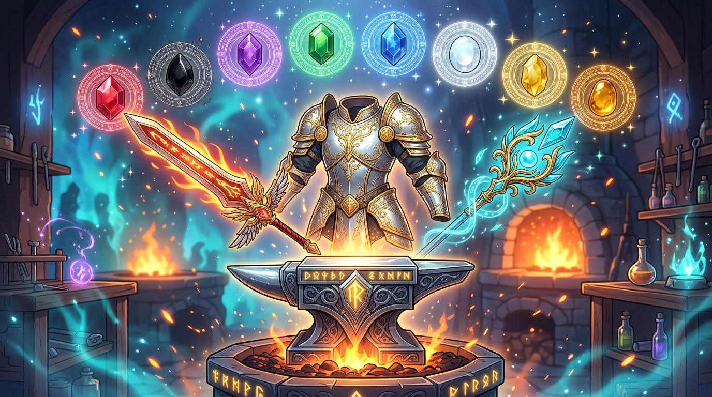

Trang chủ Đại Bách Khoa / Thư Viện Chi Tiết (Trang Bị, Ngọc & Cổ Vật) / Trang Bị 5 Ô, Bảng Giá Đá Thần Tạo & Hệ Thống 8 Loại Ngọc T1–T15
Trang Bị 5 Ô, Bảng Giá Đá Thần Tạo & Hệ Thống 8 Loại Ngọc T1–T15

Mục Lục Bài Chi Tiết
1. Năm Ô Trang Bị, Dòng Độc Nhất (Unique) & Đá Thần Tạo
- 5 Ô & Quy Tắc +5/+10: Gồm Vũ Khí (Weapon), Vũ Khí Phụ (Off-Hand), Mũ (Helmet), Áo Giáp (Armor), Giày (Boots). Luôn nâng đồng đều chạm ngưỡng Cộng Hưởng trước; đồ Đỏ 4 dòng ưu tiên chuyển hết sang chỉ số
%(%ATK / %DEF / %HP). - Dòng Unique độc quyền theo món: Vũ Khí có Song Trùng Chiến Kỹ (8%); Mũ/Áo có Khiên Gió (Wind Shield) cộng dồn 100% với Bí Thuật; lưu ý chỉ Vũ Khí Phụ cho phép khảm tự do CẢ 8 LOẠI NGỌC!
- Chi Phí Đá Thần Tạo (Divinecraft Stones): Phân rã Mảnh Đỏ =
2 Đá, Mảnh Thần =3 Đá. Phí khóa dòng tẩy:0 dòng = 100•1 dòng = 300•2 dòng = 1,200•3 dòng = 3,200 Đá.
2. Bảng Hệ Số & Tỷ Lệ Đảm Bảo Ghép 8 Loại Ngọc (T1 → T15)
| Ngọc | Loại | Chỉ Số Chính | Ô Khảm Hợp Lệ |
|---|---|---|---|
| Ruby / Sapphire / Beryl / Citrine | Ngọc Đơn | ATK / DEF / HP / SPD | Tùy ô (riêng Vũ Khí Phụ nhận hết) |
| Obsidian | Ngọc Đôi (2×) | Tấn Công + Bạo Kích | Vũ Khí Chính & Vũ Khí Phụ (DPS T0) |
| Amethyst | Ngọc Đôi (2×) | Tấn Công + Tốc Độ | Vũ Khí, Giày, Vũ Khí Phụ |
| Moonstone | Ngọc Đôi (2×) | DEF + Đỡ Đòn (Block) | Áo Giáp & Vũ Khí Phụ (Tanker T0) |
| Amber | Ngọc Đôi (2×) | HP + Tăng Trị Liệu | Mũ, Giày, Vũ Khí Phụ (Healer T0) |
Mẹo Lò Cơ Khí (T7+): T1→T6 thành công 100% (F2P dừng đều ở T5–T6). Từ T7+ tích thanh bảo hiểm (Forge Energy) bằng ngọc đơn rẻ trước khi đặt Ngọc Đôi vào. T15 đạt mốc +1,037.97% chỉ số gốc (cần 7 viên T10 đảm bảo 100%).